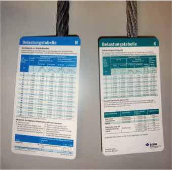
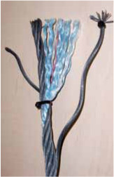
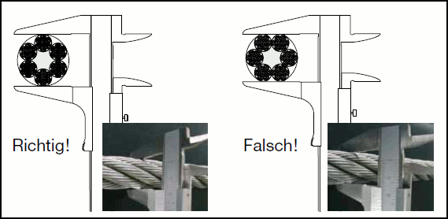

Drahtseile werden aus kaltgezogenen Stahldrähten hoher Festigkeit hergestellt.
Die Einzeldrähte werden zunächst zu einer Litze verseilt und die Litze wiederum zum Stahldrahtseil geschlagen. Der Einzeldraht liegt in einer doppelten Schraubenlinie im Seil beim einlagigen Rundlitzenseil. Durch Belastung des Seiles wird eine Volumenveränderung bewirkt, die sich aus dem Setzprozess des Litzengefüges zur Faser- oder Stahleinlage hin erklären lässt. Das Seil wird dabei geringfügig dünner.
Zur Abstützung der Litzen ist im Seilinneren eine Seele aus Fasermaterial – Natur- oder Chemiefaser – oder aus Stahldrähten eingebaut. Die Seele aus Fasermaterial übt nicht nur Stützfunktion aus, sondern sie ist auch als eine Art Schmiermittelbehälter anzusehen. Bei Belastung des Seiles drücken die Litzen auf die Faserseele und pressen eine geringe Menge Schmiermittel heraus. Dadurch wird die Reibung im Seil erheblich verringert.
Seile, bei denen das Schmiermittel verbraucht oder durch Hitzeeinwirkung verdampft ist, haben zwar nicht an Festigkeit verloren; jedoch ist die Lebensdauer des Seiles herabgesetzt. Deshalb sollte das Seil zusätzlich von Zeit zu Zeit mit geeigneten Schmiermitteln von außen gefettet werden.
Der Bruch eines Einzeldrahtes ist von untergeordneter Bedeutung, da der gebrochene Einzeldraht in kurzem Abstand von der Bruchstelle wieder im Seilgefüge eingeklemmt ist und an der Tragfunktion wieder teilnimmt. Erst wenn sich die Einzeldrahtbrüche häufen, wird die Tragfähigkeit des Seiles unzulässig herabgesetzt. Hier zeigt sich eine weitere gute Eigenschaft des Seiles: Ein Seilbruch erfolgt nie ohne Warnung durch Einzeldrahtbrüche.

Bild 8-1: Die Belastungstabelle gibt für das schmiegsame Kabelschlagseil (rechts) eine geringere Tragfähigkeit an als für die links dargestellten Litzenseile

Bild 8-2: Aufbau eines Litzenseiles
Das übliche Stahllitzenseil besteht aus sechs Litzen und der Hanfseele mit Schmiermittel. Das im Bild 8-2 dargestellte Litzenseil ist als Anschlagseil, Kran- und Windenseil üblich. Es hat eine gute Verformbarkeit und eignet sich für allgemeine Einsätze.
Demgegenüber darf ein Spiralseil oder eine einzelne Litze nicht als Anschlagseil verwendet werden. Diese Seile werden nur für Betätigungsseile und Verspannungen verwendet und sind ziemlich steif.
Die geschmeidigste Art des Anschlagseiles ist das Kabelschlagseil.
Es besteht aus mehreren Litzenseilen, die ihrerseits wieder zu einem Seil gefügt sind. Man erkennt Kabelschlagseile bereits von außen an der Feingliedrigkeit der einzelnen Litzen.
Da von ihrem Querschnitt jedoch ein recht hoher Anteil aus der Fasereinlage besteht, haben sie bei gleichem Durchmesser eine niedrigere Tragfähigkeit als die Litzenseile.
Ein Kompromiss gegenüber den steifen Seilen 6x19 und den relativ teuren Kabelschlagseilen ist das Seil 6x36.
Soll die Tragfähigkeit eines Seiles durch die Bestimmung des Durchmessers mit Hilfe der Belastungstabellen bestimmt werden, so ist das Seil diagonal über dem größten Durchmesser zu messen (Bild 8-3).
Kranseile sind anders aufgebaut, meist mehrlagig und in der Regel steifer als Anschlagseile. Sie verschleißen in unterschiedlichen Bereichen stark oder auch sehr wenig. Man kann einem abgelegten Kranseil von außen nicht ansehen, wie es innen verschlissen ist.
Deshalb dürfen abgelegte Kranseile und Reste von neuen mehrlagigen Kranseilen nie als Anschlagseile verwendet werden.
Die bisherige Norm DIN 3088 „Anschlagseile“ ging von einer Seilfestigkeit von 1770 N/mm2 aus und schrieb einlagige Litzenseile vor.
Diese Norm wurde durch die europäische Normenreihe DIN EN 13414 ersetzt, die aus folgenden Teilen besteht:
Teil 1 dieser Normenreihe legt die Anforderungen für den Aufbau die Berechnung der Tragfähigkeit von Litzenseilen fest.
Teil 2 gibt die Herstellerinformationen zum fachgerechten Gebrauch der Anschlagdrahtseile wieder.
Teil 3 legt die Anforderungen an Konstruktion, an Berechnung der Tragfähigkeit (WLL), an Prüfungen etc. von Kabelschlagseil-Grummets und Kabelschlag-Anschlagseilen fest.
Seilendverbindungen für Anschlagseile sind:
Die Tragfähigkeitstabellen der Berufsgenossenschaft (siehe BG-Information „Belastungstabellen für Anschlagmittel aus Rundstahlketten, Stahldrahtseilen, Rundschlingen, Chemiefaserhebebändern, Chemiefaserseilen, Naturfaserseilen“ [BGI 622]) geben die Tragfähigkeit der Anschlagseile entsprechend DIN EN 13414 an.
Der Verschleiß der Seile ist im Regelfall in der Mitte konzentriert. Deswegen kennen die europäischen Normen keine höhere Festigkeitsvorgabe für das Seil mit dem flämischen Auge als für ein Seil mit Pressverbindung.

Bild 8-3: Messung eines Seildurchmessers